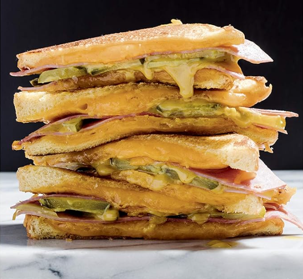

Ham and Cheese Melt
Home
All images and information for this recipe comes from the Amazon listing for the "You Suck at Cooking" Cookbook.

This is not an affiliate link and I do not receive and financial compensation if you use it. However, I did purchase this book and I love it!

Description
Some people are very passionate about the names they give
their sandwiches. While I called this sandwich a Ham and
Cheese Melt, some might call it a Grilled Cheese with Ham and
Pickles. But they might find themselves on the business end
of an earful about sandwich names. You see, there are Grilled
Cheese Purists out there who insist that a grilled cheese must
consist of nothing more than bread, butter, and cheese. As soon
as you add more ingredients, they say, the sandwich is no longer
a grilled cheese—it becomes a melt.
On the other hand, others insist that as long as it is a cheesy
sandwich fried in a pan, it remains a grilled cheese, It's simply
an enhanced grilled cheese. If I add a spoiler to my station
wagon, they argue, does it cease to be a station wagon? If I put
clothes on my baby, they say, does it cease to be a baby? What
if that baby grows into a teenager, is it still not a baby?
It's best not to get involved in these arguments. Instead, before
serving a grilled cheese or melt, ask everyone in the room what
they prefer to call it. Anyone who cares what it's called doesn't
get a sandwich.
Ingredients
- 1 tablespoon salted butter, softened
- 2 slices bread
- 1 cup shredded cheddar cheese
- 2 slices smoked ham
- 1 medium dill pickle, thinly sliced lengthwise
- 2 teaspoons honey mustard
Steps
-
Preheat a medium skillet over medium heat. Butter each slice
of bread on one side and place one slice butter side down in the pan.
then sprinkle on half the cheddar. Lay the ham on top of that, then
sprinkle the rest of the cheese on top of that.
-
Add the second piece of bread. butter side up, cover, and cook
for 2 to 3 minutes, until the bottom slice is golden brown, then flip
the sandwich, replace the cover, and cook for 1 to 2 minutes more,
until the second side is golden brown.
-
Remove the sandwich from the pan, slide a fork between the
2 slices of ham, and lift up the top. Add a layer of dill pickles, spread
honey mustard on the top side, then put the sandwich back together.
-
Cut the sandwich in half and eat it using the hole that's in your
face. The one above your chin. Not the ones above your mouth.
Notes
Did you know that some people spread mayonnaise on the
outside of the bread when pan-frying a sandwich instead of
butter? Resist the impulse to judge, consider that they might
know something you don't, and then allow the disdainful
feelings to wash over you like a haughty baptismal ceremony.
The mayonnaise adds a tangy flavor and produces beautiful
golden crustitude. That's on account of the ingredient "tang"
that is in all mayonnaises. Using butter adds a buttery flavor.
That's because of the butter. Maybe you should give the
mayonnaise a try. Or maybe you'd prefer to never evolve
and spend the rest of your life barely living in your small,
small world.